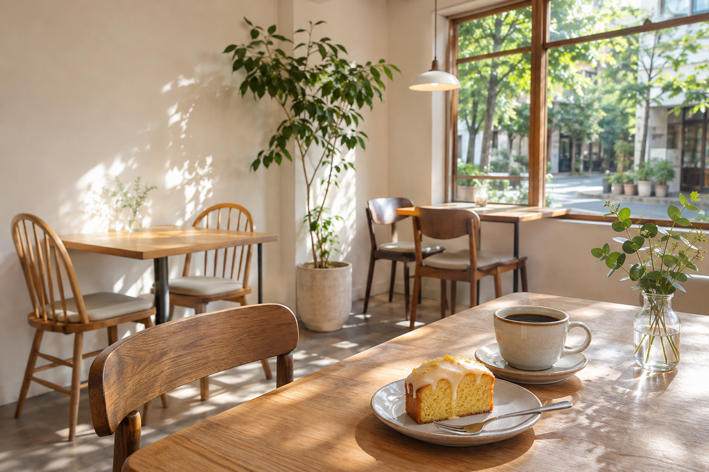

COFFEE & BAKES
淹れたての一杯と、小さなおやつ。いつもの午後に、ひと息つける場所を。

OUR DAILY MENU
香りのいいコーヒーと、店で焼き上げるおやつ。気分に合わせてお選びください。
すっきりとした飲み口の、毎日飲みたくなる一杯。
レモンの香りと、しっとりとした食感。コーヒーのおともに。
外はさっくり、中はほろり。ゆっくり味わう午後のおやつ。
A PLACE TO PAUSE
本を読んだり、近況を話したり。慌ただしい日にも、ちょっと寄り道を。木のテーブルと窓からの光がある、小さなカフェです。